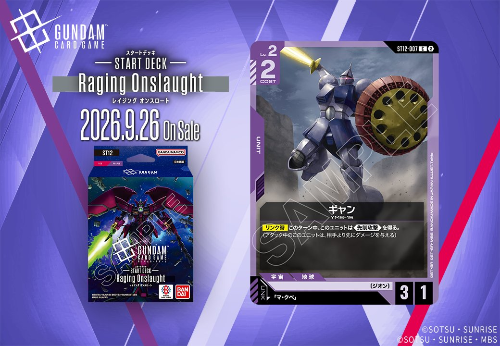

今回は、Generation Line(ST12)に収録される紫のUNIT「ギャン」(ST12-007)を紹介します。「マ・クベ」とのリンクを持つ1枚で、発売日は2026-09-26です。

ギャン (ST12-007)
| 色 | 紫 | タイプ | UNIT |
| Lv | 2 | コスト | 2 |
| AP | 3 | HP | 1 |
| 特徴 | 〔ジオン〕 | ||
| リンク条件 | 「マ・クベ」 | ||
効果: 【リンク中】このターン中、このユニットは《先制攻撃》を得る。(アタック中のこのユニットは、相手より先にダメージを与える)
ギャン(ST12-007)はLv.2/コスト2でAP3・HP1という前のめりなステータスのユニットで、リンク相手「マ・クベ」搭載時の【リンク中】に《先制攻撃》を得られる。HP1と脆いが、《先制攻撃》により相手より先にダメージを与えられるため、相手ユニットとのバトルで一方的に倒せる場面を作りやすい点が噛み合う。2026-09-26発売のST12収録。


関連カード
-
 三日月・オーガス(ST05-010)紫系デッキ内採用率36.9% (1716デッキ)
三日月・オーガス(ST05-010)紫系デッキ内採用率36.9% (1716デッキ) -
 ガンダム・バルバトスアダプト(GD03-056)紫系デッキ内採用率36.9% (1715デッキ)
ガンダム・バルバトスアダプト(GD03-056)紫系デッキ内採用率36.9% (1715デッキ) -
 ガンダム・バルバトス（第1形態）(GD02-054)紫系デッキ内採用率35.7% (1660デッキ)
ガンダム・バルバトス（第1形態）(GD02-054)紫系デッキ内採用率35.7% (1660デッキ) -
 グレイズ改(ST05-004)紫系デッキ内採用率32.5% (1514デッキ)
グレイズ改(ST05-004)紫系デッキ内採用率32.5% (1514デッキ) -
 百錬(ST05-006)紫系デッキ内採用率32.2% (1497デッキ)
百錬(ST05-006)紫系デッキ内採用率32.2% (1497デッキ) -
マ・クベ(GD01-092)緑系デッキ内採用率0.1% (5デッキ)